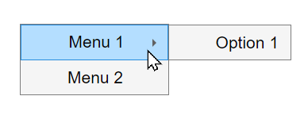

ContextMenu
Context menu UI component
- 
Description
A context menu UI component displays a set of menu items when you right-click a
graphics object or UI component. Use the ContextMenu object to modify the
appearance and behavior of a context menu after you create it.
Creation
Create a context menu in a figure using the uicontextmenu function.
Properties
Callbacks
Context menu opening callback function, specified as one of these values:
A function handle.
A cell array in which the first element is a function handle. Subsequent elements in the cell array are the arguments to pass to the callback function.
A character vector containing a valid MATLAB® expression (not recommended). MATLAB evaluates this expression in the base workspace.
For more information about specifying a callback property value as a function handle, cell array, or character vector, see Specify a Callback Function.
This callback function executes when the context menu opens in response to user interaction. You can use this callback function to customize the context menu appearance based on what the user right-clicked.
This callback function can access specific information about the user's interaction
with the app. MATLAB passes this information in a ContextMenuOpeningData
object as the second argument to your callback function. In App Designer, the argument
is named event. You can query the object properties using dot
notation. For example, event.ContextObject returns information about
which component the user right-clicked to open the context menu.
Note
While you can specify a ContextMenuOpeningFcn callback for any
context menu, the ContextMenuOpeningData object in the callback
event data is available only when the context menu satisfies both of these conditions:
The context menu is associated with a
uifigure-based app (such as an app created in App Designer).The context menu is associated with a UI component (as opposed to a graphics object, such as an
AxesorLineobject), or is associated with a container that contains only UI components.
This table lists the properties of the ContextMenuOpeningData
object.
| Property | Value |
|---|---|
ContextObject | Object that the app user right-clicked to open the context menu |
InteractionInformation | Information about where in the component the app user
right-clicked to open the context menu. This information is stored
as an object with different properties depending on the value of
For example, if
|
Source | Context menu object that executes the callback |
EventName | 'ContextMenuOpening' |
This table lists the properties of the InteractionInformation
object. The properties depend on which object the app user right-clicked to open the
context menu.
ContextObject | InteractionInformation Property | Value |
|---|---|---|
| Any | Location | Location where the user right-clicked relative to the
bottom-left corner of the parent container of the
The value
of |
ScreenLocation | Location where the user right-clicked relative to the
bottom-left corner of their primary display, returned as a
two-element vector of the form The value of | |
Table | DisplayRow | Row that the user right-clicked as it appears visually in the table, returned as a numeric scalar. If the user has not
sorted the table, then |
DisplayColumn | Column that the user right-clicked as it appears visually in the table, returned as a numeric scalar. If the user has
not rearranged the table, then | |
Row | Row that the user right-clicked as it corresponds to the original table data, returned as a numeric scalar. If
the user has not sorted the table, then | |
Column | Column that the user right-clicked as it corresponds to the original table data, returned as a numeric scalar. If
the user has not rearranged the table, then
| |
RowHeader | Whether the user right-clicked the table row header, returned as a
logical 0 (false) or
1 (true). | |
ColumnHeader | Whether the user right-clicked the table column header, returned as a
logical 0 (false) or
1 (true). | |
Tree | Node | Right-clicked node, returned as a If the user right-clicked an area of the tree
that is not associated with a node, then |
Level | Level of the right-clicked node, returned as a numeric scalar.
Nodes parented directly to the If the user right-clicked an area of the tree that
is not associated with a node, then | |
ListBox | Item | Index of the right-clicked list box item, returned as a numeric scalar. If the user right-clicked an area of the list
box that is not associated with an item, then
|
Callback Execution Control
Parent/Child
Parent object, specified as a Figure object created with either
the uifigure or figure function. If a parent figure is not specified, then MATLAB calls the figure function to create one that serves
as the parent.
You can move a ContextMenu object to a different figure by
setting this property to the target Figure object.
Context menu children, returned as an empty GraphicsPlaceholder or a vector
of Menu objects.
You cannot add or remove children using the Children property. Use this
property to view the list of children or to reorder the child menu items.
The order of the children in this array reflects the reverse-order of how
the menu items appear in an opened context menu.
For example, this code creates three context menus. When you open the context
menu in the running app, Menu1 appears as the first menu option.
fig = uifigure; cm = uicontextmenu(fig); m1 = uimenu(cm,'Text','Menu1'); m2 = uimenu(cm,'Text','Menu2'); m3 = uimenu(cm,'Text','Menu3'); fig.ContextMenu = cm;

cm.Children returns a list of the menu items in the reverse
order.
cm.Children
ans = 3×1 Menu array: Menu (Menu3) Menu (Menu2) Menu (Menu1)
Objects with the HandleVisibility property set to 'off' are not listed in the Children property.
To add a child to this list, set the
Parent property of another
Menu object to this
ContextMenu object.
Visibility of object handle, specified as 'on', 'callback', or 'off'.
This property controls the visibility of the object in its parent's list of children. When an
object is not visible in its parent's list of children, it is not returned by functions
that obtain objects by searching the object hierarchy or querying properties. These
functions include get, findobj, gca, gcf, gco, newplot, cla, clf, and close. The
HandleVisibility property also controls the visibility of the
object’s handle in the parent figure's CurrentObject property.
Objects are valid even if they are not visible. If you can access an object, you can set
and get its properties, and pass it to any function that operates on
objects.
| HandleVisibility Value | Description |
|---|---|
'on' | The object handle is always visible. |
'callback' | The object handle is visible from within callbacks or functions invoked by callbacks, but not from within functions invoked from the command line. This option blocks access to the object at the command line, but allows callback functions to access it. |
'off' | The object handle is invisible at all times. This option is
useful for preventing unintended changes to the UI by another
function. Set the HandleVisibility to
'off' to temporarily hide the handle during
the execution of that function. |
Identifiers
This property is read-only.
Type of graphics object, returned as 'uicontextmenu'.
Examples
Create a context menu that prints a message in the Command Window each time you open it.
Create a line plot in a figure. Then, create a context menu with one menu item and
assign it to the line plot. Create a ContextMenuOpeningFcn callback
function that displays output in the Command Window each time the context menu
opens.
f = figure; cm = uicontextmenu(f); m = uimenu(cm,"Text","Menu1"); cm.ContextMenuOpeningFcn = @(src,event)disp("Context menu opened"); p = plot(1:10,"ContextMenu",cm);
To view the context menu, right-click the plot line. When the context menu opens,
the Command Window displays Context menu opened.

Since R2023b
Create an app that displays hyperlinks and allows users to copy the link URLs to the clipboard using a context menu.
In a file named hyperlinkApp.m, write a function that implements
the app:
Create a UI figure and a grid layout manager to lay out the app.
Create two hyperlinks in the grid layout manager.
Create a context menu with a
Copy Hyperlinkmenu item, and assign the context menu to both of the hyperlinks.Write a callback function named
copyHyperlink. In the callback function, access the right-clickedHyperlinkobject by using theevent.ContextObjectevent data, and then copy the URL to the clipboard. Assign the function to theMenuSelectedFcncallback property of the menu item. For more information about callbacks, see Create Callbacks for Apps Created Programmatically.
function hyperlinkApp fig = uifigure; g = uigridlayout(fig,[2, 1]); g.RowHeight = {'fit','fit'}; hlink1 = uihyperlink(g); hlink1.Text = "MathWorks Home"; hlink1.URL = "https://www.mathworks.com/"; hlink2 = uihyperlink(g); hlink2.Text = "MATLAB App Building"; hlink2.URL = "https://www.mathworks.com/products/matlab/app-designer.html"; cm = uicontextmenu(fig); m = uimenu(cm); m.Text = "Copy Hyperlink"; hlink1.ContextMenu = cm; hlink2.ContextMenu = cm; m.MenuSelectedFcn = @copyHyperlink; end function copyHyperlink(src,event) url = event.ContextObject.URL; clipboard("copy",url) end
Before R2023b: Write the callback function to access the
right-clicked Hyperlink object by querying the
CurrentObject property of the figure instead of by using the
event.ContextObject event data.
Run the hyperlinkApp function. Right-click one of the hyperlinks,
and then select Copy Hyperlink to copy the link URL.

Since R2023b
Create an app that displays a table and allows users to delete rows by using a context menu item. Program the context menu item to appear only when a user right-clicks a row of table data.
In a file named tableApp.m, write a function that implements the
app:
Create a UI figure and a table UI component with some random data.
Create a context menu with a
Delete Rowmenu item, and assign the context menu to the table.Write two callback functions to respond to context menu actions:
deleteRow— Query the row of the table that was right-clicked, and then delete that row.toggleVisibility— Show theDelete Rowmenu item when the user right-clicks a row of table data, and hide the item otherwise.
In each callback, use the
event.InteractionInformationcallback event data to access information about where in the table the user right-clicked to open the context menu.Assign the
deleteRowfunction to theMenuSelectedFcncallback property of the menu item, and assign thetoggleVisibilityfunction to theContextMenuOpeningFcncallback property of the context menu. For more information about callbacks, see Create Callbacks for Apps Created Programmatically.
function tableApp fig = uifigure; tbl = uitable(fig); tbl.Position = [20 20 400 300]; tbl.Data = randi(10,[10 4]); cm = uicontextmenu(fig); m = uimenu(cm); m.Text = "Delete Row"; tbl.ContextMenu = cm; m.MenuSelectedFcn = @deleteRow; cm.ContextMenuOpeningFcn = @(src,event)toggleVisibility(src,event,m); end function deleteRow(src,event) tbl = event.ContextObject; row = event.InteractionInformation.Row; tbl.Data(row,:) = []; end function toggleVisibility(src,event,m) row = event.InteractionInformation.Row; rowClicked = ~isempty(row); m.Visible = rowClicked; end
Run the tableApp function and right-click the table. The context
menu appears only when you right-click a table row. Select the Delete
Row item to delete the right-clicked row.

The specific callback event data stored in the
event.InteractionInformation property depends on the UI component
that the user right-clicked to open the context menu. For more information, see the
callback property descriptions on Menu and ContextMenu.
Since R2023b
Create a context menu for a tree component. Customize the context menu action based on the level of the tree node that the user right-clicks.
In a new script in your current folder, create a UI figure. Then, create a tree with four top-level nodes and a set of nested nodes.
fig = uifigure; t = uitree(fig,"Position",[20 200 175 100]); category1 = uitreenode(t,"Text","Runners"); r1 = uitreenode(category1,"Text","Joe"); r2 = uitreenode(category1,"Text","Linda"); category2 = uitreenode(t,"Text","Cyclists"); c1 = uitreenode(category2,"Text","Rajeev"); category3 = uitreenode(t,"Text","Hikers"); h1 = uitreenode(category3,"Text","Jack"); category4 = uitreenode(t,"Text","Swimmers"); s1 = uitreenode(category4,"Text","Logan");

Create a context menu with one menu item and two submenus that users can click to
expand a single tree node or all of the tree nodes. For each submenu, specify a
MenuSelectedFcn callback function to execute when a user selects
the menu option.
cm = uicontextmenu(fig); m1 = uimenu(cm,"Text","Expand..."); sbm1 = uimenu(m1,"Text","This Node", ... "MenuSelectedFcn",@expandSingle); sbm2 = uimenu(m1,"Text","All Nodes", ... "MenuSelectedFcn",@expandAll);
Assign the context menu to the top-level tree nodes by setting the
ContextMenu property of each node to the
ContextMenu object.
category1.ContextMenu = cm; category2.ContextMenu = cm; category3.ContextMenu = cm; category4.ContextMenu = cm;
At the bottom of the file, define the expandSingle and
expandAll callback functions. Define the functions to accept the
source and event data that MATLAB passes to all callback functions. Use the
event.InteractionInformation and
event.ContextObject properties to access information about where
the user right-clicked to open the context menu.
function expandSingle(src,event) node = event.InteractionInformation.Node; expand(node) end function expandAll(src,event,t) n = event.ContextObject; t = ancestor(n,"uitree"); expand(t) end
Save and run the script. Right-click any of the top-level tree nodes to view the context menu.

Version History
Introduced before R2006aSee Also
uimenu | uicontextmenu | open